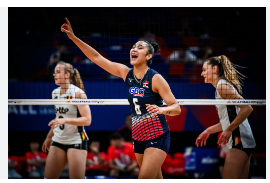
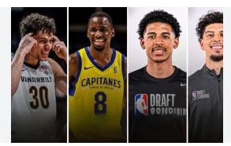
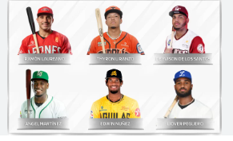

Juan Soto y el Traspaso Récord en la MLB
Escrito por: Luis Angel Rojas el 21 de Octubre
El fenómeno dominicano Juan Soto fue protagonista de un traspaso histórico en las Grandes Ligas de Béisbol (MLB).
Su movimiento a un nuevo equipo generó gran revuelo, dada su edad y su potencial,
consolidándolo como uno de los
bateadores más cotizados del deporte. Este traspaso fue el tema central de conversación en la prensa deportiva
internacional.
Éxito Dominicano en la Liga de Voleibol de Naciones (VNL)
Escrito por: Luis Angel Rojas el 15 de Julio

La selección femenina de voleibol de la República Dominicana, conocidas como "Las Reinas del Caribe", tuvo una
destacada participación en la Liga de Voleibol de Naciones (VNL). El equipo mostró un nivel
de juego excepcional,
superando a varias potencias mundiales y asegurando su posición de élite en la clasificación internacional, lo
que eleva las expectativas para los próximos Juegos Olímpicos.
Jóvenes Talentos Dominicanos en el Baloncesto Europeo
Escrito por: Luis Angel Rojas el 16 de abril

Varios jóvenes basquetbolistas dominicanos han dado el salto al baloncesto profesional en Europa, firmando contratos
importantes con clubes de alto nivel en ligas de España, Francia y Lituania. Este fenómeno
destaca la calidad de la
formación de la cantera dominicana y el creciente interés de los scouts europeos por el talento de la isla.
Preparativos y Refuerzos de Equipos para la LIDOM (Béisbol Invernal)
Escrito por Luis Angel Rojas el 18 de junio

Los equipos de la Liga de Béisbol Profesional de la República Dominicana (LIDOM) están ultimando sus preparativos para
la próxima temporada. La noticia principal gira en torno a la confirmación de la participación de varias estrellas de
las Grandes Ligas y la llegada de managers internacionales de renombre, prometiendo una temporada de alta competitividad
y gran interés para la afición.